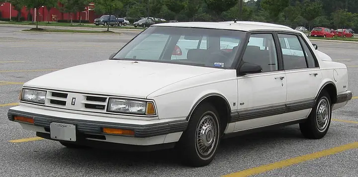
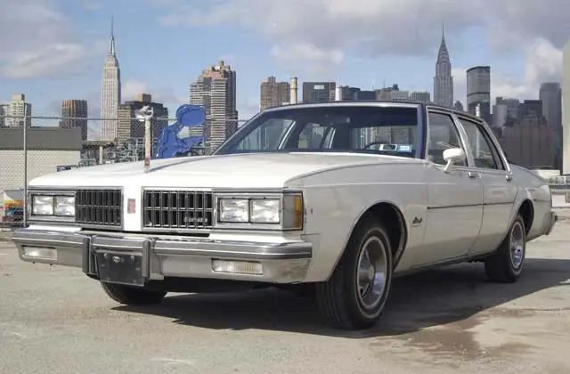
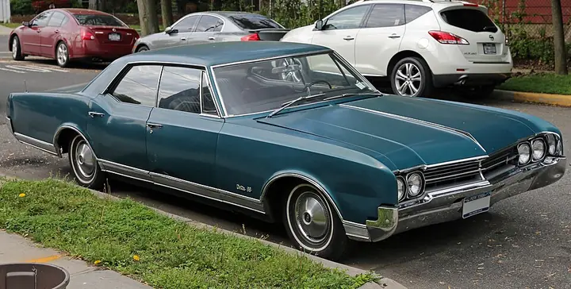
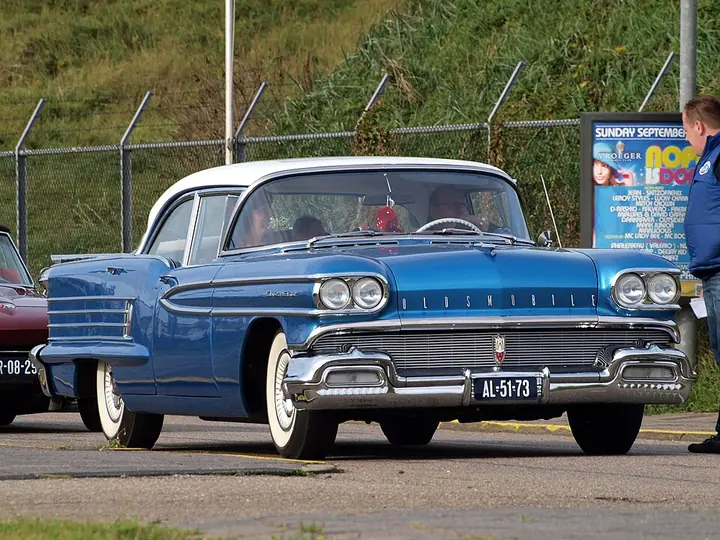
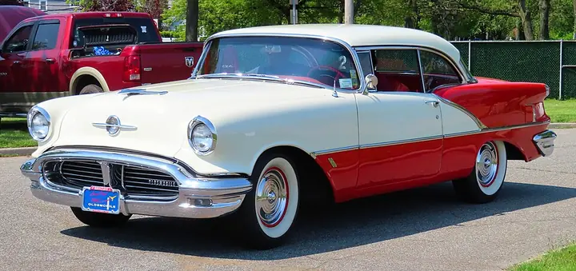
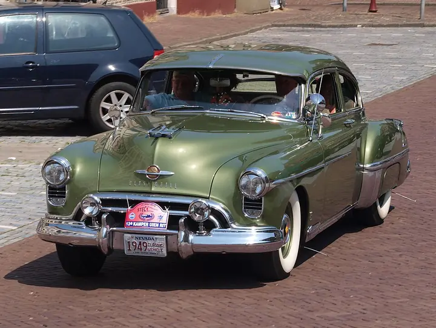

Oldsmobile 88
Tenth generation (1992–1999) · 1992–1999
Abstract
This generation of the Oldsmobile 88 was built 1992–1999 in United States:, Flint, Michigan (Buick City, 1992–1995), Wentzville Assembly (Missouri); (1992–1993) and other plants. Body styles: 4-door sedan. Layout: Transverse front-engine, front-wheel drive.


1Specifications
| Model years | 1992–1999 |
|---|---|
| Assembly | United States:Flint, Michigan (Buick City, 1992–1995)Wentzville Assembly (Missouri); (1992–1993)Orion Assembly (Michigan); (1994–1999)Detroit/Hamtramck Assembly (Michigan); (1996) |
| Body style | 4-door sedan |
| Layout | Transverse front-engine, front-wheel drive |
| Platform | H-body |
| Engine | 3.8 L L27/L36 V63.8 L L67 supercharged V6 |
| Transmission | 4-speed 4T60-E automatic4-speed 4T60-E HD automatic4-speed 4T65-E automatic |
| Wheelbase | 110.8 in |
| Length | 1992–95 & Regency: 200.4 in1996–97: 201.6 in1998–99: 200.6 in |
| Width | 1992–95 & Regency: 74.1 in1996–97: 74.7 in1998–99: 74.0 in |
| Height | 55.7 in1998–99 LSS: 56.1 in |
| Also called | Oldsmobile LSSOldsmobile Regency |
| Related | Buick LeSabrePontiac Bonneville |
2Versions
- LSS (Luxury Sport Sedan)
- Regency
- Oldsmobile Guidestar
3Previous generations







_(cropped).jpg){kind=link}

.jpg){kind=link}






4Generation by generation
Length −1% from the first to the last
1949–1953 19495,131 mm
1954–1956 19545,214 mm
1959–1960 19595,527 mm
1961–1964 19615,446 mm
1977–1985 19775,524 mm
1986–1991 19865,019 mm
1992–1999 19925,090 mm